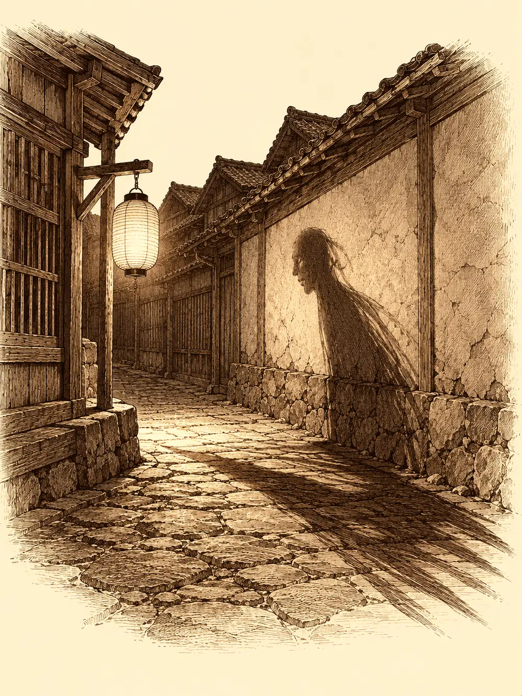

Capítulo 37
Las sombras del pasado
Libro III · La boda del shogun
Al cuarto día reconocieron el río.
Lo habían cruzado tantas veces en otras salidas que el lugar tenía para ellos algo de casa: la misma curva de agua lenta, las mismas piedras planas en la orilla, el mismo rumor. Habían pasado junto al mismo árbol quince veces siguiendo a Sun Gukon, que juraba conocer el bosque, y otras tantas siguiendo a Erk, que desde el aire solo veía copas. Jin se había hartado al tercer día. Dijo que se iba por su cuenta y se fue, y ninguno sabía si habría llegado a Ukio o seguiría dando vueltas entre los árboles.
Ikari había aprovechado aquellos días para estudiar su copia del mapa. Era un mapa de Kuroto entero, con sus cuatro cruces, y él era de aquella tierra aunque hubiera salido poco del bosque de su aldea. Las historias que le habían contado de niño le sirvieron para algo. En aquellos lugares, decían las leyendas, hubo antiguamente templos dedicados a dioses viejos, o a bestias, nadie se ponía de acuerdo, porque los relatos se habían ido torciendo con los siglos. Una cruz estaba en una isla pequeñísima al sur de Sho. Otra, al norte, entre las montañas que rodeaban la ciudad arruinada de Yoki. La tercera, escondida en el bosque, cerca del monte Shudo. La cuarta, en las montañas del sur.
"Los cuatro puntos cardinales", dijo el tanuki, y dio un trago de su botella.
Maroxi no podía quitarse de la cabeza el trozo de cuero con el símbolo que habían arrancado a los muertos. Él no era de Kuroto, no conocía su historia, pero quería saber quiénes eran aquellos soldados, a quién habían servido y por qué volvían a andar. En Sho habría historiadores. Quizá el propio shogun supiera algo.
Erk tenía otra preocupación, más vieja. Llevaba más de un par de meses en Kuroto y aún no sabía nada del poblado de los suyos que buscaba. El único que podía ayudarla era Hayate, y Hayate apenas aparecía por la base. Según le había contado Sirth, desde que le cayó un rayo encima y estuvo a punto de morir, el arquero andaba distante y había empezado a levantar un altar para el dios que, según él, lo había salvado.
Sun no pensaba en nada que no fuera su libro. Lo llevaba abierto sobre las rodillas en cada descanso.
"¿Sabías que puedo levantar una montaña? Lo pone aquí, colega".
Shiru estaba sentado en una piedra con la bolsa abierta entre las piernas, mirando dentro con una cara de desastre que ninguna de las batallas de la semana le había puesto. Le quedaban dos barras de pan.
"¿Pone en tu libro cómo se hace pan?", le preguntó al mono.
"Con harina y agua, supongo".
El cervan lo miró como si le hubiera respondido en otro idioma.
Maroxi llevaba atadas al cinturón las dos cabezas de vampiro, y después de cuatro días al sol empezaban a oler. Nadie quería caminar a su lado.
Llegaron a Ukio de noche. Atravesaron los campos y las primeras casas a oscuras, como era normal a aquellas horas, pero al entrar en la calle principal algo no estaba bien. Las sombras que proyectaban los faroles se movían de un modo extraño, contra la luz, como si tuvieran voluntad propia.
Ikari fue el primero en entenderlo. Había visto cosas así en el Shadowfell.
"Sombras errantes", susurró. "Muertos del pasado. Atacan a cualquier cosa viva, y aguantan casi todo".
Las sombras giraron la cabeza hacia ellos.
Una se lanzó contra Sun con la mano extendida y el monje la esquivó por poco. Ikari levantó la suya y una bola de fuego estalló en mitad de la calle; las llamas mordieron a las sombras, aunque menos de lo que esperaba. Shiru golpeó a una con el escudo, se movió entre dos para que se estorbaran y consiguió que una descargara su golpe contra la otra, pero lo que a un enemigo vivo le habría hecho daño a aquellas criaturas apenas las rozaba.
Entonces aparecieron dos más grandes.
Tenían forma de hombre y vestían armaduras como las de los muertos del bosque, pero más altas, más imponentes, las armaduras de generales. Una de ellas blandía una espada, y a Maroxi se le erizó todo el vello del cuerpo: era de cristal. O lo había sido. Lo que el general empuñaba ahora era su reflejo, la sombra de un arma que había llevado en la batalla, tan oscura como el resto de él. La otra cargaba un hacha enorme a dos manos.
Los generales no caminaban. Se hundían en una sombra y salían de otra, junto a sus víctimas. El de la espada apareció al lado de Maroxi y le hizo un tajo; luego, sin pausa, otro a Sun. Las heridas no sangraban: por ellas se escapaba la fuerza. Sun lo notó en los brazos de inmediato: el bastón le pesaba el doble.
Maroxi conjuró una bola de fuego. Alcanzó a las sombras y alcanzó también la puerta de Haru, que reventó hacia dentro con un estampido, dejando la pared ennegrecida y humeante.
La pelea se volvió una lucha por no caer. Ikari eliminaba sombras con fuego y Shiru conseguía que los generales se golpearan entre sí. Maroxi bailaba con sus espadas entre las defensas mágicas de los espectros, que hacían resbalar el acero. Sun se lanzó contra el general de la espada con todo lo que le quedaba, golpe tras golpe, puños y bastón, hasta que la sombra se deshizo como humo en el viento y la espada de cristal desapareció con ella. Maroxi alcanzó a verla un último instante, brillando oscura, antes de que no quedara nada.
Cada golpe de los espectros les robaba un poco más de fuerza. Sun acabó con tan poca que apenas podía mantenerse en pie; tenía los brazos como trapos. Shiru, el más fuerte de todos, también lo notaba. Erk curaba a quien podía y se mantenía en el aire, fuera del alcance de las sombras, sin dejar de ayudar. Ikari tocó su anillo y la magia acelerada se repartió entre dos compañeros. Luego se refugió con Maroxi dentro de la casa del pescador, la que ya no tenía puerta.

Desde allí, Maroxi lanzó otra bola de fuego. Esta vez Shiru estaba junto a los enemigos, y las llamas lo envolvieron también a él. Poco después, el mago le hizo llegar una poción. El cervan se la bebió sin mirarlo.
Las flechas de Erk atravesaron al general del hacha y la sombra se disolvió con su arma. Erk fue acabando con las que quedaban, una a una. La última la apagó Ikari, con un hilo de fuego que no habría encendido una vela, pero bastó.
Nadie había muerto. Sun estaba tirado en el suelo, incapaz de levantar el bastón. Shiru se agachó, se lo cargó al hombro y se incorporó, y por primera vez desde que lo conocían se le vio hacer esfuerzo para levantar un peso.
El ruido había despertado a media calle.
Asami salió primero, en camisón, con una vela en la mano y frotándose los ojos. Kitaro asomó por la puerta de la taberna. Hitoshi apareció refunfuñando desde la herrería, donde llevaba toda la noche trabajando en un encargo del mono. Desde una esquina, sin que nadie más lo viera, el shinobi los observaba y les hacía señas preguntando qué pasaba. La última en llegar fue la dueña del burdel, con un camisón tan lujoso como sus kimonos, un moño enorme y la cara embadurnada de cremas.
No había habido más ataques en el pueblo. Todos estaban durmiendo.
Asami se acercó a Sun, que seguía colgado del hombro de Shiru, le levantó un brazo y lo dejó caer.
"Habéis perdido mucha fuerza. ¿Con qué os habéis enfrentado?".
Shiru sacó el trozo de cuero con el símbolo.
Kitaro, Hitoshi y el shinobi lo miraron sin entender. Asami y la dueña del burdel, no. Las dos se quedaron muy quietas, y en la cara de ambas apareció la misma expresión de reconocer algo que no esperaban volver a ver.
"Es el símbolo del ejército antiguo", dijo la mujer del burdel.
"De una civilización que hubo en Kuroto hace mucho tiempo", añadió Asami. Le preguntaron cómo eran los espíritus y ella misma los describió, las sombras con armadura, sin que nadie se lo dijera. "Esto es muy extraño. No debería haber pasado. Esas criaturas no deberían estar aquí". Añadió algo sobre alguien que estaba muerto, pero dijo el nombre tan bajo que no llegaron a entenderlo. Las dos mujeres empezaron a cuchichear entre ellas, preocupadas.
"Esto habría que hablarlo despacio", dijo Maroxi. "Pero antes, si puedes ayudarnos".
Asami metió la mano en su bolsa, que no era más grande que una calabaza, y el brazo se le hundió hasta el hombro. Hubo tintineos de cristal. Sacó unas pociones de restablecimiento y las fue repartiendo. Al beberlas, la fuerza les volvió a los brazos poco a poco, como sangre que regresa a un miembro dormido.
Les recomendó buscar en Sho. Allí había historiadores y libros de historia antigua. Maroxi sacó su volumen de leyendas para enseñarle lo que había encontrado sobre los árboles, y ella lo hojeó con interés.
"Este es uno de los tomos de Antiguas leyendas. Son cuarenta y siete. Aquí falta mucho".
Luego pareció acordarse de algo. Volvió a meter el brazo en la bolsa y sacó otro libro, más grueso, con una superficie lisa y brillante en la tapa, como un cristal.
"He visto que estáis ayudando a toda esta gente y me empezáis a caer bien. Esto es para vosotros. Apuntáis con él a una criatura que esté cerca, a unos sesenta pies, y si es un yokai os dirá su nombre y su clase. Además podéis preguntarle dos cosas: qué fuerza tiene, a qué resiste, cuánta vida le queda. Lo llamo Yokédex".
Lo dejaría en la caja común para que lo llevara quien quisiera, sin contar como el objeto que cada uno podía tomar prestado.
Hitoshi seguía de mal humor.
"Toda la noche trabajando y vosotros montando este jaleo". Le arrojó a Sun algo que había traído en la mano. "Toma".
Eran unos brazaletes cubiertos de escamas verdes, las del dragón. Mientras no llevara armadura ni escudo lo protegerían, y además le harían resistir el veneno. Sun se los puso con cuidado. Le quedaban perfectos. El herrero ya se había dado la vuelta y bajaba la calle refunfuñando.
Maroxi aprovechó para ofrecer a Asami lo que traía del bosque. La alquimista levantó con una varilla el labio de una de las cabezas y examinó los dientes.
"Con esto quizá podamos hacer algo. Trampas, tal vez. ¿Te importa?".
Sacó unos alicates enormes y arrancó los cuatro colmillos. Después tomó los corazones, ennegrecidos, retorcidos sobre sí mismos, y los sopesó uno en cada mano. Uno lo tiró al suelo.
"Este no. Este sí".
Maroxi se quedó con las cabezas. Intentó que Kitaro se las cocinara.
"¿Sabes cocinar sesos?".
El tabernero lo miró largamente sin decir nada. Retrocedió un paso hacia su puerta, luego otro, entró sin dejar de mirarlo y cerró despacio, hasta que solo quedó una rendija con un ojo. Después se oyó la llave.
Antes de que se marcharan a la base, los shinobi a sueldo de la casa les hicieron llegar flechas y un estuche de disfraces. Maroxi había conseguido también un pergamino con un conjuro de rapidez; si era de su escuela de magia, podría copiarlo en su libro, aunque eso tendría que esperar. La dueña del burdel se le acercó al oído antes de irse.
"Ya que estás, ¿quieres venir a dormir conmigo? Tengo la casa aquí al lado".
"Tengo entrenamiento con un mago", contestó él.
Se alejó murmurando algo sobre las magias que ella podría enseñarle, y la perdieron de vista en la esquina.
Eran las dos de la madrugada. La puerta de Haru seguía en el suelo, la pared chamuscada humeaba todavía y nadie sabía por qué las sombras de un ejército muerto habían venido a buscarlos a las calles de Ukio. Los cinco echaron a andar hacia la base con las piernas temblorosas, Sun con sus brazaletes nuevos, Shiru apretando contra el pecho sus dos últimas barras de pan.